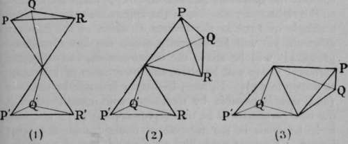
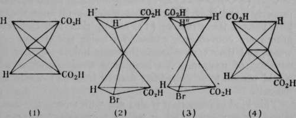
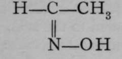
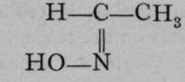

Stereo Isomerism Due To Double Linkage
Description
This section is from the book "Modern Chemistry", by William Ramsay. Also available from Amazon: Modern Chemistry: Theoretical and Modern Chemistry (Volume 2).
Stereo Isomerism Due To Double Linkage
There is another variety of stereo-isomerism which cannot be detected by the rotation of polarised light. It is assumed that in such a compound as tartaric acid (see Fig. 7), the two tetrahedra, shown connected by their apices, are free to revolve round a vertical axis joining the two asymmetric carbon atoms, and passing through the point of junction of the two tetrahedra. Taking (1) of Fig. 7, if, for example, R and R' happen to lie on a line parallel to that axis, we may have a compound different from one in which R and Q' should lie on that line, as in the figure. If, however, such a configuration were to exist, it would not be permanent, for owing to the revolution of the tetrahedra round the vertical axis passing through their apices, the original configuration would be produced, and R and R' would again lie on the same vertical line. Of course this is on the assumption that the relative positions of P', Q', and R' are not changed, otherwise an isomeride is produced capable of acting on polarised light.
Now, if the atoms of carbon be connected, not singly, as in the instances in Fig. 7, but doubly, such a power of rotation is hindered. Such a configuration is shown in Fig. 8. The figure may be derived from one of those in Fig. 7 by supposing R and R' to be removed by some appropriate reagent; the tetrahedra will then be joined along one of the edges instead of only at the apices, and the carbon atoms will be "doubly linked." In (1) of Fig. 8 a double tetrahedron, like that shown in Fig. 7, is reproduced; (2) shows the approach of the two solid angles; in (3), R and R' are removed, giving the new configuration. Such a compound is termed "unsaturated." By addition of such an element as bromine, the compound again becomes saturated, and ( i) is reproduced with bromine atoms in place of R and R'.
Fig. 8.
Fig. 9.
No. (3) of Fig. 8 is reproduced in Fig. 9(1), but the letters have been changed, so as to represent actual groups present in two acids, named respectively fumaric and maleic acids. The formula given in (1) is that of maleic acid. This acid, when exposed to hydrogen bromide, HBr, combines with it; but the double linkage between the central carbon atoms is thereby broken, and (2) is produced. The upper tetrahedron is now f»ee to rotate round the axis joining the two central carbon atoms; and it is supposed that rotation takes place until the position of greatest stability is reached. In (2) we may observe that two hydrogen atoms occupy the left corners; a hydrogen atom and a bromine atom occupy the solid angles projecting towards the spectator, and two carboxyl groups are situated on the right. By rotation of the upper tetrahedron through an angle of 120° in the inverse direction of the hands of a watch, H' will be vertically above the lower carboxyl group, H" will be above the bromine atom, and the upper carboxyl group will be above the lower atom of hydrogen, as shown in (3). If, now, hydrogen bromide be removed (and this is possible by treatment with caustic potash), the configuration will be that represented in (4) ; and this, it is believed, is the formula of fumaric acid, the other isomer. Fumaric acid, like maleic acid, can also combine with hydrogen bromide, but on its removal fumaric acid is reproduced.
An acid containing two carboxyl groups often has the property of losing the elements of water when heated, and yielding an anhydride; in the case before us,C2H2(COOH)2 = C2H2(CO)2O 4- H2O. Now maleic acid alone has this property ; and it is inferred that maleic acid must therefore possess the structure (1), seeing that the carboxyl groups are conveniently situated for losing the elements of water, and their carbon atoms for being linked together by an atom of oxygen. To imagine a configuration which would pertain to an anhydride derived from (4) would be difficult.
This kind of isomerism is also met with among the compounds of nitrogen, which, it will be remembered, acts often as a triad. For example, substances named aldoximes are known in which nitrogen is doubly linked to carbon ; and it is also united to a hydroxyl group. Such substances are known in two modifications ; and it appears probable that the two varieties possess some such configurations as : in  and  which resemble those of fumaric and maleic acids.
Continue to: